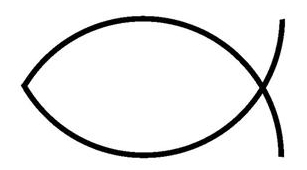
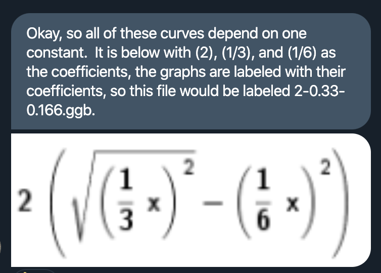
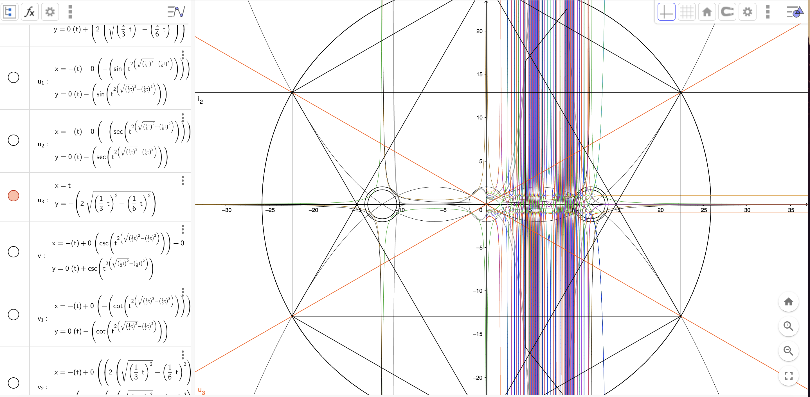
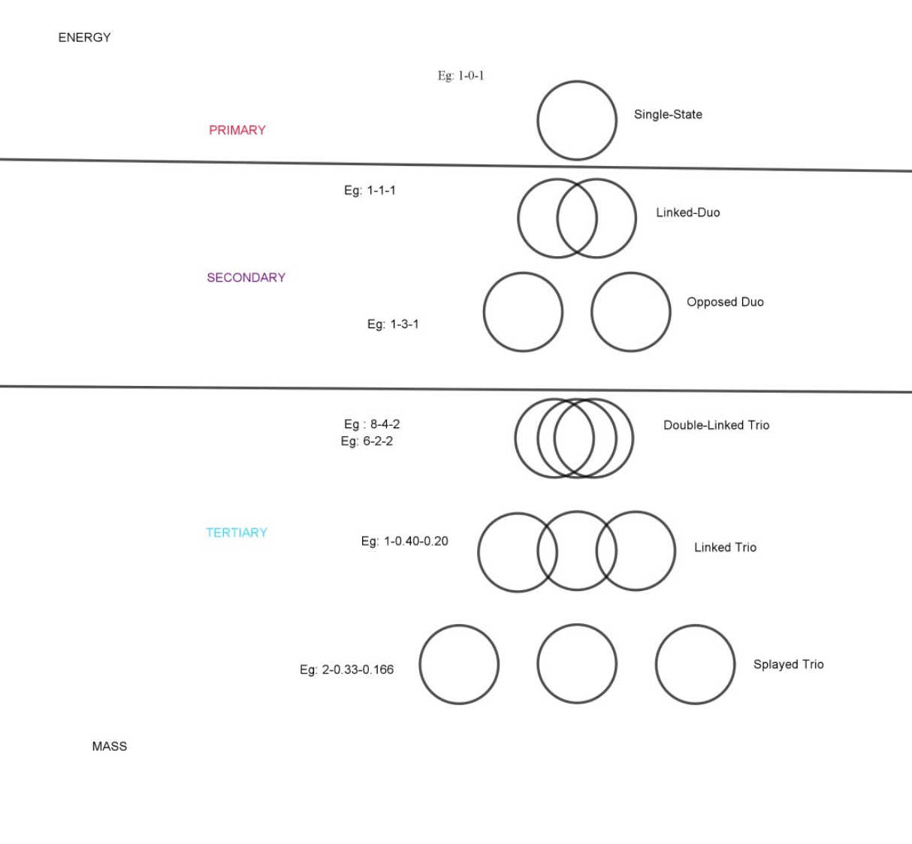

You have probably seen one of these fish symbol stickers on some cars, or on the streets’ graffiti:
This is Icthus symbol in Christianity, also known as Vesica Piscis, and is a repeating pattern in Christian paintings of Jesus and saints. In this project we explore how this pattern formalized as a mathematical constant stretches beyond a particular religion and into the realm of universal, sacred geometry.
We are a couple of quantum enthusiasts exploring a logical system where specific relationships between numerically related algebric equations generates an easily recognizable sphere theory.
Jason Chewning (Nymphoton) has explored these curves from the equations for the past 5 years, and explains the logical system in layman terms:
The square root of three is a constant that can be geometrically and trigonometrically
identified, measured, represented. The Vesica Piscis is simply y = x / sqrt(3),
and the logic system is an iteration of that constant. All the algebraic iterations in the
logic system, when fully simplified, all comes down to y = x / sqrt(3).
However when one starts off un-simplified version, one could alter
the algebra and produce a number of distinctly related curves.
For instance, currently all the logic system is recorded in Geogebra in this way:
Taking above sample equation as U(x), then the entire spectrum of curves is:
Mapping it out yields the image below:
Stunning, but what does this mean? That’s what we’re trying to find out. Jason has first classified a bunch of iterations he did over the years into a “gate system” outlined below:
So the previous example was an example of ‘Splayed trio’, as you can see three distict circles not touching each other.
We will be
If you’re interested in joining this project, please contact Jason (@Nymphoton) on Twitter!
Or if you have ideas / comments for the project, leave them on our public Notion board. You can also check our progress on the project there.